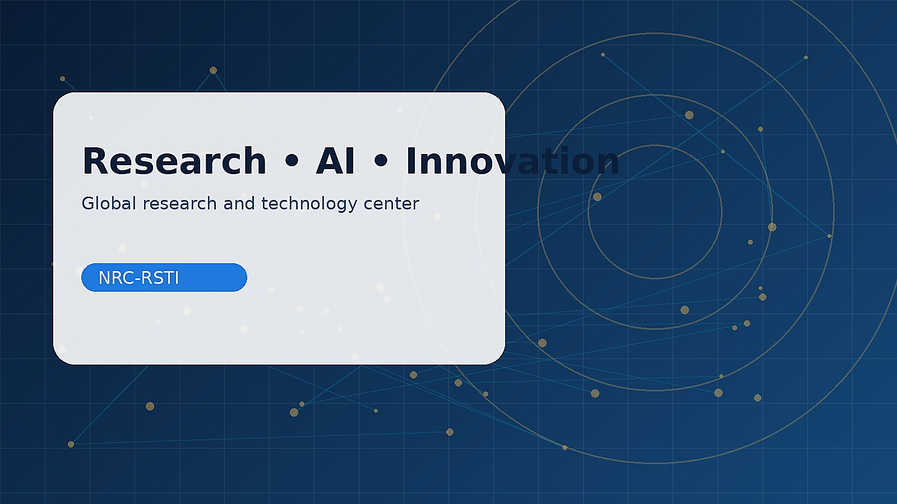

2026 · DOI: 10.1109/eSmarTA70636.2026.11652324
مركز نعمة رسام للأبحاث والدراسات مساحة متعددة التخصصات تجمع البحث العلمي، الذكاء الاصطناعي، تطوير التعليم، الابتكار، والاستشارات المبنية على الأدلة. نستعرض هنا توجهات المركز وبرامجه ومبادراته المقترحة.

تتضمن مكتبة الموقع أوراقًا علمية منشورة لمؤلفين من جهات متعددة، وعروضًا تقديمية وتسجيلات بحثية مرتبطة بها؛ ولا تعني إتاحتها أن المركز جهة نشرها الرسمية.
2026 · DOI: 10.1109/eSmarTA70636.2026.11652324

2026 · DOI: 10.1109/eSmarTA70636.2026.11652200

2025 · DOI: 10.1109/eSmarTA66764.2025.11132174
بنية مؤسسية تركّز على جودة المعرفة، قابلية التطبيق، والالتزام بالأخلاقيات العلمية.
البرامج المؤسسية المستقبلية ما زالت مقترحة؛ أما المواد البحثية المنشورة والعروض والفيديوهات فيُعرض توثيقها في الأقسام المخصصة.
الذكاء الاصطناعي، التعليم، الأنظمة الذكية، المنهجيات، الدراسات المستقبلية، والسياسات.
استكشف القسمتصورات لمشاريع علمية وتطبيقية في STEM والروبوتات وإنترنت الأشياء.
استكشف القسمتصفح الأوراق العلمية المنشورة وملفات عروضها وروابط DOI.
استكشف القسمالفريق المؤسسي قيد التوثيق، مع فهرس مستقل لمؤلفي الأوراق المنشورة.
استكشف القسمنافذة للأخبار المؤسسية والمقالات التحليلية والتحديثات الموثقة.
استكشف القسمتسجيلات عروض بحثية موثقة، إلى جانب برامج مستقبلية مقترحة.
استكشف القسممسار منهجي يربط النزاهة العلمية بالتطبيق العملي.
صياغة المشكلة البحثية وأهداف الدراسة.
تقييم الأدبيات والبيانات وفق منهجية شفافة.
تصميم النماذج أو البرامج وتقييمها.
توثيق النتائج وترجمتها إلى معرفة قابلة للاستخدام.
صفحات تخصصية محفوظة من البنية الأصلية، مع توضيح مجالاتها باللغة المختارة.
نسعد بالاستفسارات المهنية والاقتراحات المتصلة بتوجهات المركز.